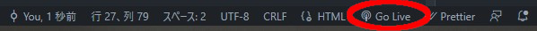

ローカルサーバで確認しよう！
VSCodeのプラグイン「Live Server」を使って自分のPC内でwebサーバを立ち上げてhttp://localhost:5500にアクセスしてみましょう！
こちら↑のURLからVSCode拡張をインストールします。
【インストール手順】
- urlにブラウザでアクセスしてinstallボタンをクリック。
- 「Visual Studio Code is required to install this extension.」というポップアップが出てきた場合はContinueをクリック。(出ない場合もある)
- 「Visual Studio Code を開きますか？」というアラートがでるので開くボタンをクリック。
- 拡張機能: Live Serverのタブが表示されるのでインストールボタンをクリック。
- VSCodeの右下に「Go Live」の表示が追加されていればokです！
サーバを立ち上げるときはVSCodeの右下の「Go Live」をクリックするとブラウザが開かれるので表示したいファイルを選択してください。
